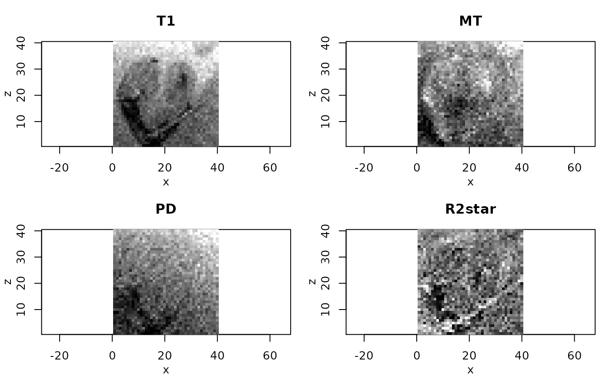
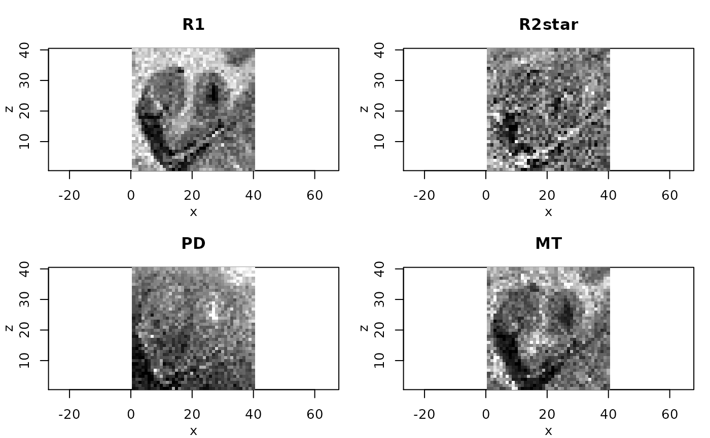

calculateQI.RdQuantitaive imaging parameters are calculated from the estimated parameters
in the ESTATICS model. This involves a correction for magnetic field inhomogeneities
if the information is provided in argument b1File and use of a second
of a second recovery delay TR2 in case of Dual-Exitation FLASH measurements
(Helms 2008).
calculateQI(mpmESTATICSModel, b1File = NULL, TR2 = 0, verbose = TRUE)| mpmESTATICSModel | Object of class 'ESTATICSModel' as returned from function |
|---|---|
| b1File | (optional) Name of a file containing a B1-field inhomogeneity map (.nii) |
| TR2 | second recovery delay TR2 in case of Dual-Exitation FLASH measurements. |
| verbose | logical: Monitor process. |
List with components
b1Map
Estimated map of R1
Estimated map of R2star
Estimated map of PD
Estimated map of delta (if MT-series was used)
Type of ESTATICS model used
filenames T1
filenames MT
filenames PD
brainmask
Helms, G.; Dathe, H.; Kallenberg, K. & Dechent, P. High-Resolution Maps of Magnetization Transfer with Inherent Correction for RF Inhomogeneity and T1 Relaxation Obtained from 3D FLASH MRI Magn. Res. Med., 2008, 60, 1396-1407
Weiskopf, N.; Suckling, J.; Williams, G.; Correia, M. M.; Inkster, B.; Tait, R.; Ooi, C.; Bullmore, E. T. & Lutti, A. Quantitative multi-parameter mapping of R1, PD(*), MT, and R2(*) at 3T: a multi-center validation. Front Neurosci, Wellcome Trust Centre for Neuroimaging, UCL Institute of Neurology, University College London, UK., 2013, 7, 95
J. Polzehl, K. Tabelow (2019). Magnetic Resonance Brain Imaging: Modeling and Data Analysis Using R. Springer, Use R! series. Doi:10.1007/978-3-030-29184-6.
Karsten Tabelow tabelow@wias-berlin.de
J\"org Polzehl polzehl@wias-berlin.de
dataDir <- system.file("extdata",package="qMRI")
#
# set file names for T1w, MTw and PDw images
#
t1Names <- paste0("t1w_",1:8,".nii.gz")
mtNames <- paste0("mtw_",1:6,".nii.gz")
pdNames <- paste0("pdw_",1:8,".nii.gz")
t1Files <- file.path(dataDir, t1Names)
mtFiles <- file.path(dataDir, mtNames)
pdFiles <- file.path(dataDir, pdNames)
#
# file names of mask and B1 field map
#
B1File <- file.path(dataDir, "B1map.nii.gz")
maskFile <- file.path(dataDir, "mask0.nii.gz")
#
# Acquisition parameters (TE, TR, Flip Angle) for T1w, MTw and PDw images
#
TE <- c(2.3, 4.6, 6.9, 9.2, 11.5, 13.8, 16.1, 18.4,
2.3, 4.6, 6.9, 9.2, 11.5, 13.8,
2.3, 4.6, 6.9, 9.2, 11.5, 13.8, 16.1, 18.4)
TR <- rep(25, 22)
FA <- c(rep(21, 8), rep(6, 6), rep(6, 8))
#
# read MPM example data
#
library(qMRI)
mpm <- readMPMData(t1Files, pdFiles, mtFiles,
maskFile, TR = TR, TE = TE,
FA = FA, verbose = FALSE)
#
# limit calculations to voxel in the central coronal slice
# to reduce execution time of the example
#
#
# Estimate Parameters in the ESTATICS model
#
modelMPM <- estimateESTATICS(mpm, method = "NLR")
#> Design of the model:
#> [,1] [,2] [,3] [,4]
#> [1,] 1 0 0 0.023
#> [2,] 1 0 0 0.046
#> [3,] 1 0 0 0.069
#> [4,] 1 0 0 0.092
#> [5,] 1 0 0 0.115
#> [6,] 1 0 0 0.138
#> [7,] 1 0 0 0.161
#> [8,] 1 0 0 0.184
#> [9,] 0 1 0 0.023
#> [10,] 0 1 0 0.046
#> [11,] 0 1 0 0.069
#> [12,] 0 1 0 0.092
#> [13,] 0 1 0 0.115
#> [14,] 0 1 0 0.138
#> [15,] 0 0 1 0.023
#> [16,] 0 0 1 0.046
#> [17,] 0 0 1 0.069
#> [18,] 0 0 1 0.092
#> [19,] 0 0 1 0.115
#> [20,] 0 0 1 0.138
#> [21,] 0 0 1 0.161
#> [22,] 0 0 1 0.184
#> done
#> Start estimation in 1600 voxel at 2021-05-17 15:22:09
#>
|
| | 0%
|
|============================================ | 62%
#> Finished estimation 2021-05-17 15:22:12
#
# resulting ESTATICS parameter maps for central coronal slice
#
if(require(adimpro)){
rimage.options(zquantiles=c(.01,.99), ylab="z")
oldpar <- par(mfrow=c(2,2),mar=c(3,3,3,1),mgp=c(2,1,0))
pnames <- c("T1","MT","PD","R2star")
modelCoeff <- extract(modelMPM,"modelCoeff")
for(i in 1:4){
rimage(modelCoeff[i,,11,])
title(pnames[i])
}
}
#> Loading required package: adimpro
#> Reading RAW images requires to install dcraw, see
#>
#> http://cybercom.net/~dcoffin/dcraw/ for LINUX and http://www.insflug.org/raw/
#> for MAC OS and Windows
#> Use awsMethods::setCores(ncores) to specify number of cores for openMP

#
# Compute quantitative maps (R1, R2star, PD, MT)
#
qMRIMaps <- calculateQI(modelMPM,
b1File = B1File,
TR2 = 3.4)
#> reading B1 correction file
#> calculating R1 ... Spoiling correction ... v3* 0.8mm R4 protocol
#> Spoiling correction ... v3* 0.8mm R4 protocol
#> done
#> calculating PD ... done
#> calculating MT ... done
#
# resulting quantitative maps for central coronal slice
#
if(require(adimpro)){
rimage.options(zquantiles=c(.01,.99), ylab="z")
par(mfrow=c(2,2),mar=c(3,3,3,1),mgp=c(2,1,0))
nmaps <- c("R1","R2star","PD","MT")
qmap <- extract(qMRIMaps,nmaps)
for (i in 1:4){
rimage(qmap[[i]][,11,],main=nmaps[i])
}
par(oldpar)
}
